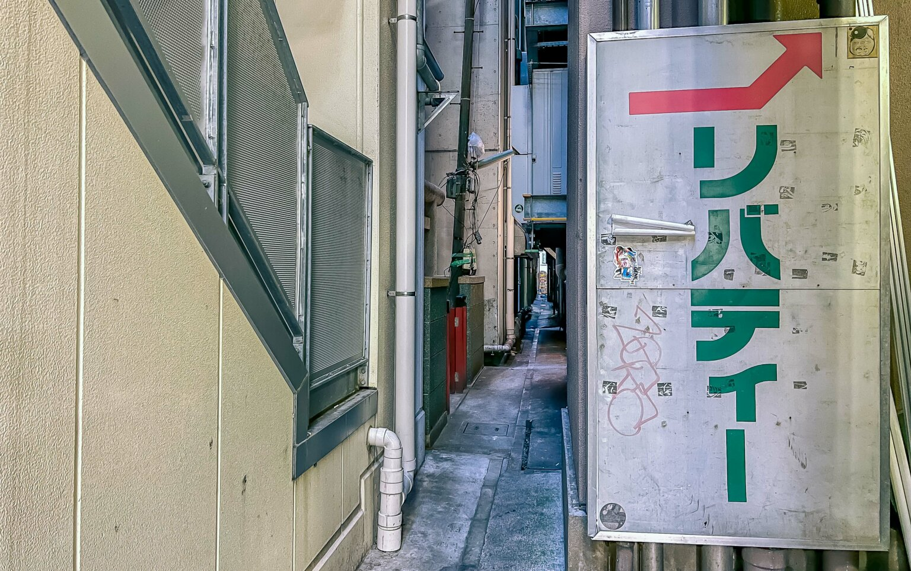
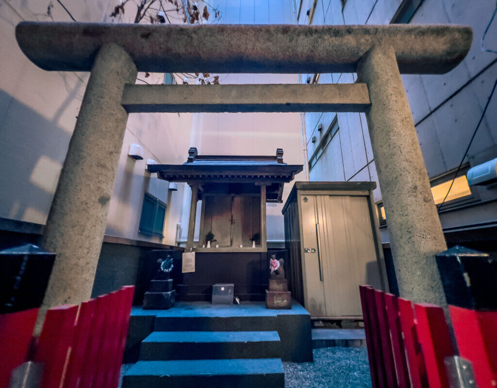
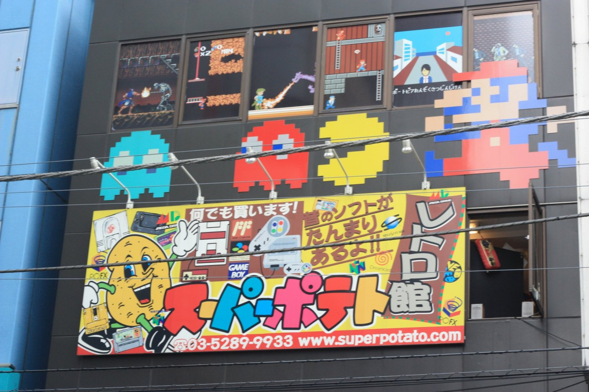
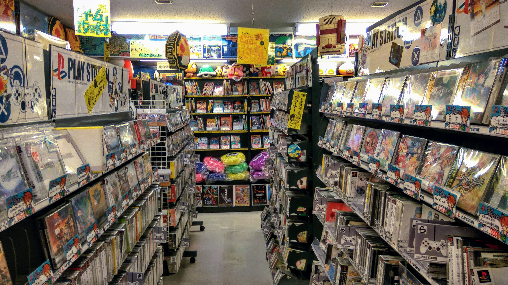
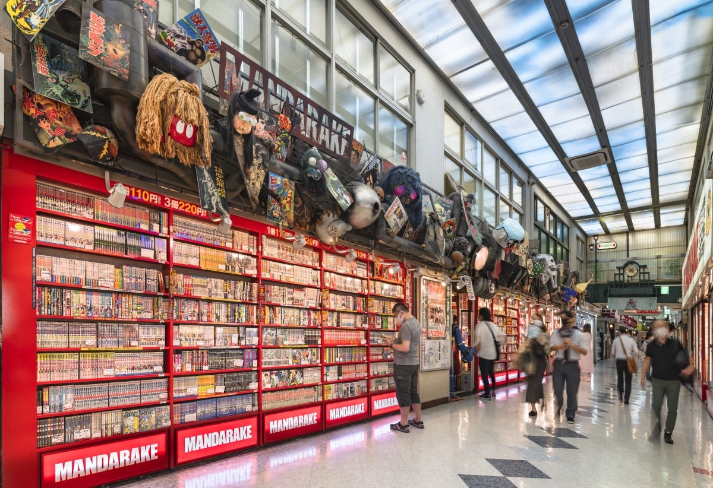
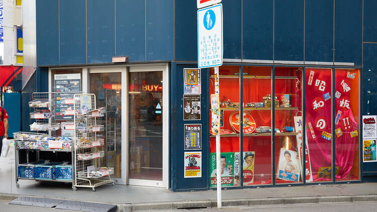
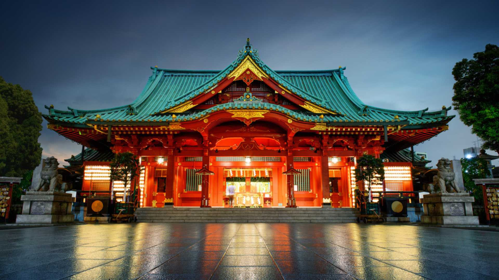

Tóquio é uma cidade de muitos segredos, desde bares escondidos no topo de edifícios até um tanque de água do tamanho de uma cidade construído sob a cidade para mitigar os efeitos das inundações. Você pode caminhar por qualquer número de becos escondidos atrás dos arranha-céus e com certeza encontrará uma joia escondida. Esta é a história de um dos santuários menos visitados no coração de Akihabara - o Santuário Hanabusa Inari. Antes de Tóquio se tornar, bem, Tóquio, ela era conhecida como Edo até a Restauração Meiji em 1868. Edo foi nomeado quando o xogunato Tokugawa assumiu o poder no Japão e mudou a capital administrativa do Japão de Kyoto para Edo em 1603. Diz-se que era foi durante o Período Edo – que também terminou em 1868 – que o Santuário Hanabusa Inari foi construído em Kanda, embora não em sua forma atual.
|  |  |
Apesar do fluxo do tempo e da constante renovação de tudo em Tóquio, alguém poderia pensar que um pequeno santuário como o Santuário Hanabusa Inari teria se perdido ao longo dos anos, mas ainda está de pé depois de Deus sabe quanto tempo. Há algo de mágico, quase ao estilo Ghibli, em apenas vagar por um beco discreto em uma das áreas mais high-tech do mundo e encontrar um pedaço bem conservado da história japonesa.
Sim, você tem o grande Santuário Kanda, assim como muitos outros espalhados por Tóquio, mas todos foram modernizados de uma forma ou de outra - seja por meio de um playground, sistemas de iluminação ou qualquer outra conveniência do século XXI. O Santuário Hanabusa Inari é diferente; sua elegância e beleza vêm de sua simplicidade. A coisa mais moderna do santuário é a placa de endereço e um poste elétrico que foi erguido logo dentro do terreno – tem que achar um lugar para colocar essas coisas!
O Santuário Hanabusa Inari é dedicado a Uda no Omachi, uma divindade da comida. Enquanto na época em que foi originalmente construída, a área provavelmente era usada por fazendeiros no pântano que era Edo, avançando para agora e os cientistas loucos de Akihabara raramente precisam rezar por comida - já que uma loja de conveniência está a poucos passos longe–, a menos que houvesse um restaurante bem na frente do santuário…
A cultura pop empregada é uma das subculturas representativas do Japão e também ganhou muita popularidade em todo o mundo nos últimos anos!
Maid cafés são onde você pode encontrar empregadas adoravelmente vestidas, apresentações ao vivo chiques e comida fantástica. Essas lojas atraem até mesmo senhoras que têm um interesse passageiro em coisas fofas!
A característica mais original do café é o seu interior espaçoso e relaxante. Como o café emprega muitas empregadas, você certamente encontrará uma com uma personalidade que fale com você! Você também pode tirar fotos comemorativas com as empregadas aqui ou jogar jogos competitivos com elas
Ao entrar na loja, uma arrumadeira irá recebê-lo como se você tivesse acabado de voltar para casa. Enquanto você caminha pela loja, a empregada toca uma campainha e um coro de "Bem-vindo de volta, mestre, senhora!" soará de todas as empregadas que ouvirem o toque.
A hora da refeição é de uma hora para todos os hóspedes. A taxa básica para uso do restaurante seria a taxa de entrada e qualquer item do menu solicitado, e isso começa em apenas 1.400 ienes (imposto incluído).
Há também pacotes que vêm com sessões de fotos ou uma oportunidade de jogar com as empregadas. Alguns pacotes também podem incluir comida ou sobremesa.
Para iniciantes que não sabem qual atividade tentar, considere pegar um de seus pacotes apenas para simplificar. Isso liberará sua atenção para mais tempo com as empregadas borbulhantes esperando por você!

A Super Potato Akihabara é uma loja especializada na venda de videogames usados. Os videogames japoneses são surpreendentemente populares e têm um grande número de fãs em todo o mundo. Você pode encontrar videogames antigos que trarão de volta memórias de infância e que provavelmente você não conseguirá jogar no seu país, então muitas pessoas acabam passando mais tempo lá do que esperavam originalmente! No quinto andar, o Super Potato também tem um fliperama vintage, uma atividade divertida em um dia chuvoso (ou em qualquer dia, na verdade).
 Procurando o melhor complexo de compras de anime e mangá? Não procure mais do que Mandarake! Aqui você poderá encontrar de tudo, incluindo, entre outros, mangá, anime, estatuetas, pôsteres, brinquedos, jogos e muito mais. Este é um ótimo lugar para comprar não apenas algumas lembranças para levar para casa, mas também pode ser um presente perfeito para amigos e familiares em casa. Claro, há muitos produtos exclusivos do Japão aqui, tornando ainda mais divertido navegar pelos 8 andares.
 
Se você está procurando alguns lugares históricos para visitar nesta cidade movimentada, o Santuário Kanda Myojin pode ser o lugar perfeito para experimentar o aspecto mais tradicional do Japão. É um santuário xintoísta estabelecido em 730, tornando-se o santuário mais antigo de Tóquio! Ele consagra três divindades diferentes; o deus do laço matrimonial Onamuchinomikoto (大己貴命), o deus da prosperidade dos negócios Sukunahikonanomikoto (少彦名命) e o deus da expulsão do mal Tairanomasakadonomikoto (平将門命). É um dos santuários mais poderosos e frequentemente frequentado por um grande número de pessoas. O santuário também encena (partes do) Festival de Kanda, um dos maiores festivais xintoístas. Também é visitado por muitos turistas e fãs de anime devido à sua localização acessível e à colaboração com personagens de anime famosos!
|  |
O portão principal de dois andares, Zuishin-mon (隨神門), marca a entrada do Santuário de Kanda. Zuishin-mon foi reconstruído em 1995 com madeira de cipreste e foi construído com um telhado em estilo irimoya. O edifício do santuário é construído no estilo xintoísta de Gongen-zukuri. É pintado de vermelho e decorado com ouro e interiores laqueados. Muitas esculturas de seus kami consagrados podem ser encontradas no terreno do edifício.
|
Durante o período Meiji, o Imperador Meiji enfrentou pressão pública para incluir o Santuário Kanda nos Dez Santuários de Tóquio (東京十社, Tokyo Jissha), mas hesitou em fazê-lo por causa da associação do santuário com Taira no Masakado, que era visto como um perigoso demagogo antigovernamental. Isso foi temporariamente resolvido removendo Taira no Masakado como um kami consagrado. No entanto, o espírito de Masakado provou ser tão popular entre os plebeus, que foi simbolicamente devolvido ao santuário após a Segunda Guerra Mundial.